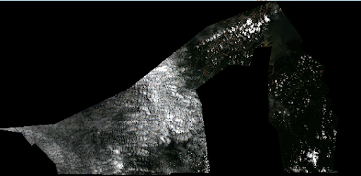
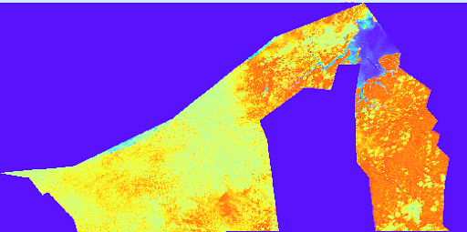
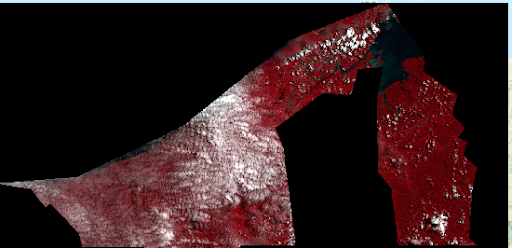

Land Cover Classification
The region of interest
For this assignment, I chose Brunei as my region of interest, since it is a tropical country with a high amount of jungle-like areas. I thought this would make for an interesting land use classification and therefore make good maps of for example healthy vegetation. I used google earth engine to create the polygon of Brunei merging it with sattellite data. I then analyzed it in ArcGIS pro. Below, there is a map in true color bands (432-band), showing the satellite images from sentinel two of Brunei between may and june of 2024. The images are filtered to display as little cloud coverage as possible. Still, there are quite a lot of clouds visible, which interfered with the analyses I ran.
Healthy Vegetation
Every material absorbs and reflects a certain spectrum of electromagnetic radiation, called a spectral signature. Based on this, land cover can be identified. For example, healthy vegetation reflects a lot of near infrared (NIR). Using these spectra, a map can be made showing the healthy vegetation in a region. In this case, I made this map of Brunei, shown below on the right. I created a false color composite, by changing the bands to a B8, B4, B3 band, showing the higher infrared reflection of healthy vegetation in darker red. I also ran a NDVI, showing the density and health of vegetation. This is the image below on the left. It shows the vegetation is mostly differences on the east island.
 